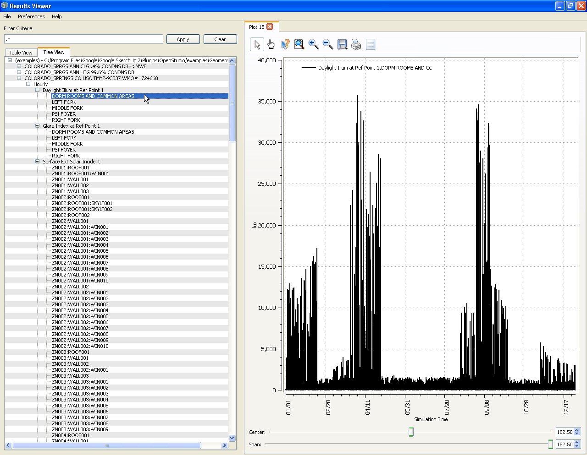
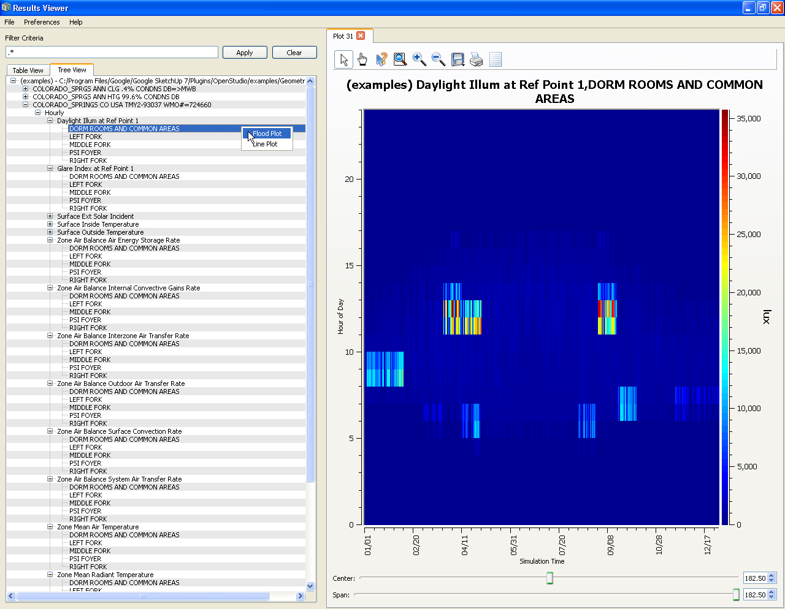
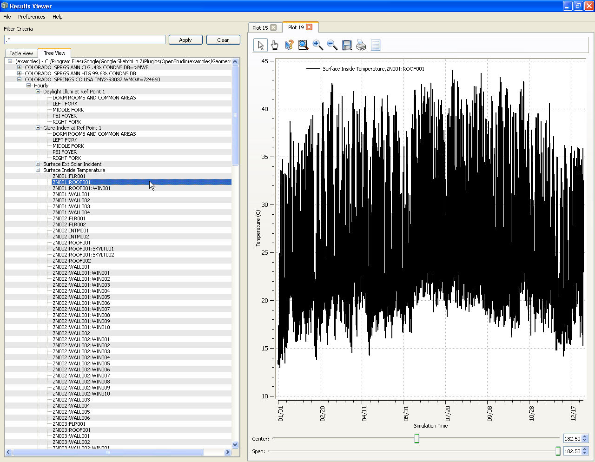
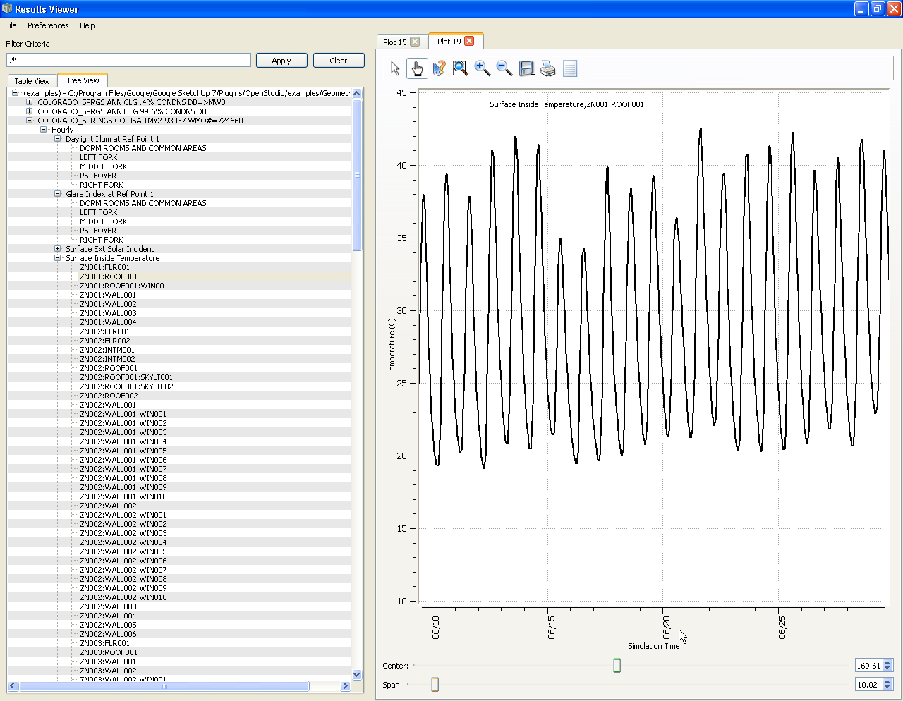
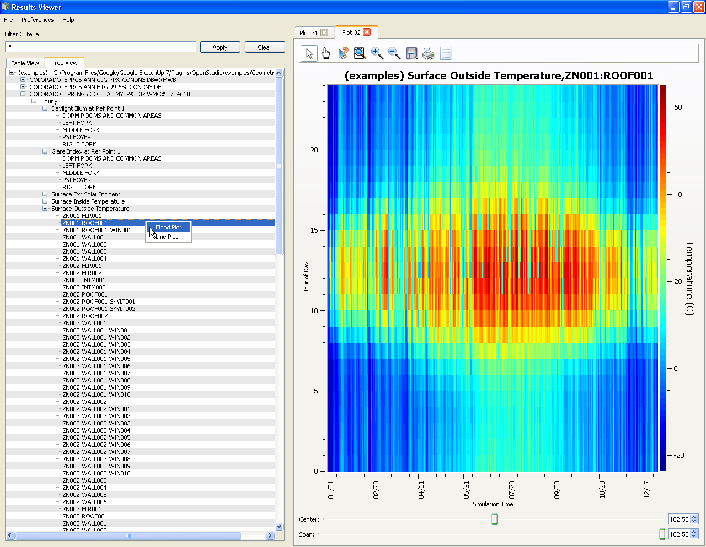
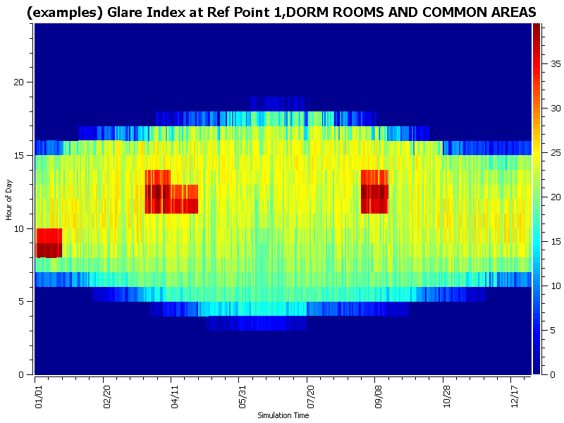
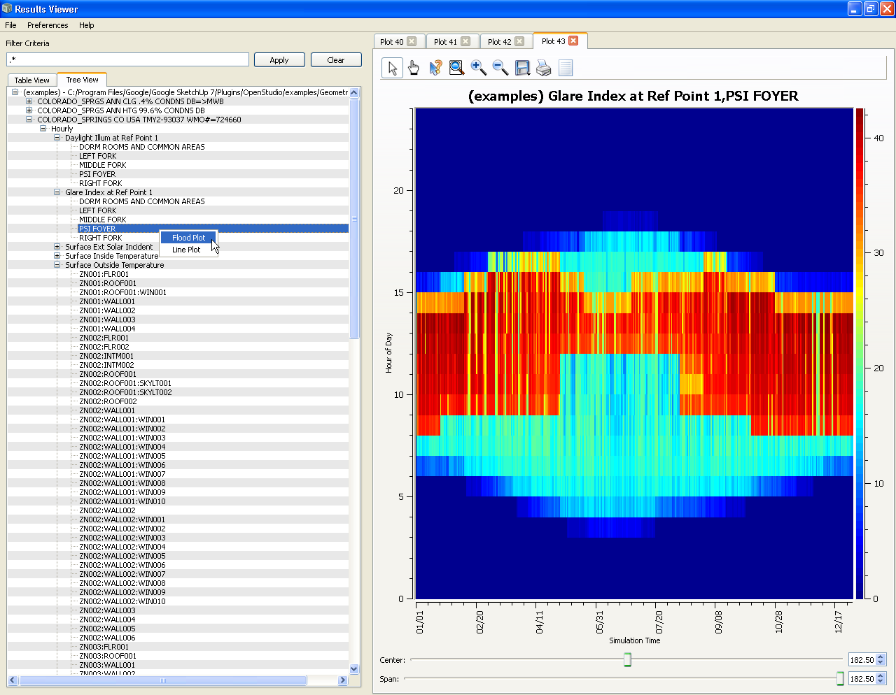
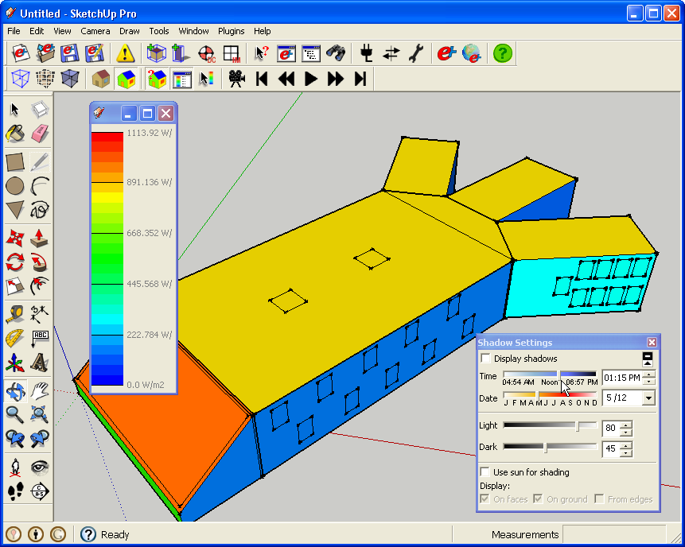

Opening SQL files in ResultsViewer
About ResultsViewer
- ResultsViewer is a new application that enables you to view simulation results from EnergyPlus. Its many features will help you view data in a number of ways.
- This tutorial does not teach you how to use ResultViewer; rather, it introduces you to it and shows you some results. The results here are from the "GeometryTest.idf" used elsewhere in the OpenStudio documentation.
- When running a simulation, check the "Request results in SQLite format" to have access to the data in Results Viewer.
- Learn more about and download ResultsViewer.
Daylight Illuminance Sample
- Daylighting Controls Reference Point data for "DOOR ROOMS AND COMMON AREAS" zone is shown as a line plot.
- This graph shows lux values over the course of the year. The interface enables you to zoom in on particular dates.

(Credit: David Goldwasser/NREL)
- The same data can also be viewed as a flood plot.
- Hours are on the "Y" axis; days of the year are on the "X" axis.
- The lux values are now represented as color, with a legend to the right of the plot.
- Depending on your needs, you may find one method more useful than another.

(Credit: David Goldwasser/NREL)
Exterior Surface Temperatures Example
- Exterior surface temperatures for the roof of the "DOOR ROOMS AND COMMON AREAS" zone shown as a line plot over the course of a year.

(Credit: David Goldwasser/NREL)
- This is the same data set, but is now viewed zoomed in to a few weeks instead of a year.
- Here you can see the day-to-day fluctuations of the surface temperature.

(Credit: David Goldwasser/NREL)
- The same data, this time as a flood plot.

(Credit: David Goldwasser/NREL)
Glare Index
- Instead of a screenshot, the following image shows what you can export directly from ResultsViewer. You can save it as an image and then import it into a presentation or paper.
- This image shows the glare at the location of the Daylighting Control Reference Point.

(Credit: David Goldwasser/NREL)
- Below is another glare example, this time of the "PSI Foyer", the sloped roof that receives a lot of direct sunlight.

(Credit: David Goldwasser/NREL)
OpenStudio Screenshot of Building Being Used for this Tutorial
- An image from OpenStudio of the building being used for the results on this tutorial follows.

(Credit: David Goldwasser/NREL)
Surface Ext Solar Incident at 1:15pm on 5/12
- To see simulation results for this building, in Open Studio, see the "View Simulation Results Tutorial".
|